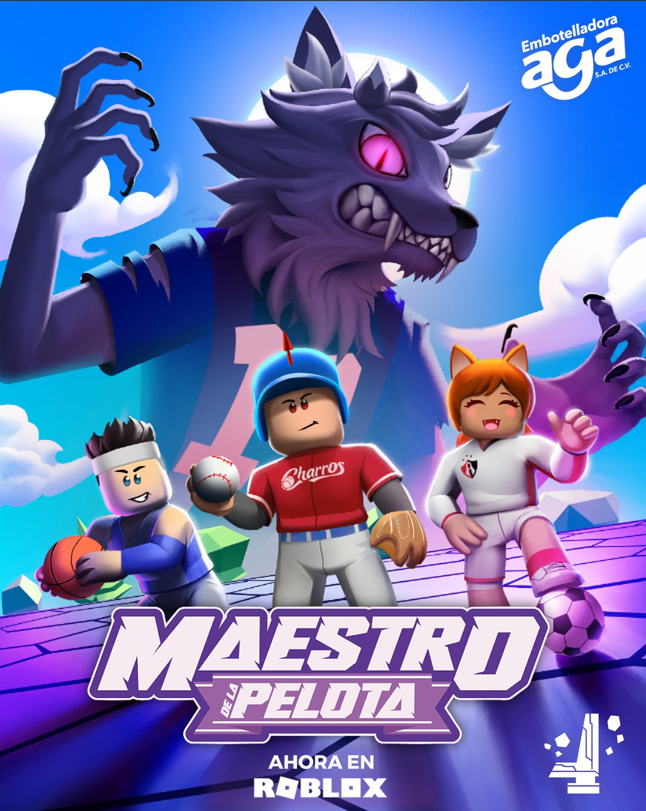

Proyectos Destacados

Diseñadora de Sonido, Procesamiento de Diálogos and Desarrolladora de Página Web
DEPTHS
Instalación inmersiva de audio espacial 4D que explora la conciencia a través del arte sonoro, estrenada y exhibida en Lobe Studio en Vancouver, Canadá.

Editora de Audio
Killer Vacancy
Una joven frágil se muda a una casa compartida, donde descubre que sus extraños compañeros de cuarto tienen una idea retorcida de una broma pesada.


Diseñador de Sonido y Diseñador Técnico de Sonido
Maestro de la Pelota
Diseñé sonido e implementé audio para un videojuego en Roblox.
Editora de Audio y Mixer
Rediseño de Sonido de Au Revoir Mon Monde
Rediseñé el sonido de un clip de 3 minutos del cortometraje Au Revoir Mon Monde. Esto incluye edición de música, SFX, grabación y edición de foley y ADR.
Editora de Audio
Rediseño de Sonido de Arrival
Rediseño de sonido de la película Arrival. Esto incluye edición de música, SFX, grabación y edición de foley y ADR
Diseñador de Sonido y Diseñador Técnico de Sonido
AFLOAT
Demo de diseño de sonido, implementación de audio y características del juego que hice para un videojuego